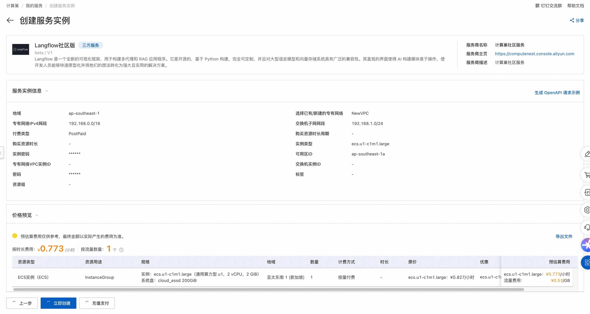
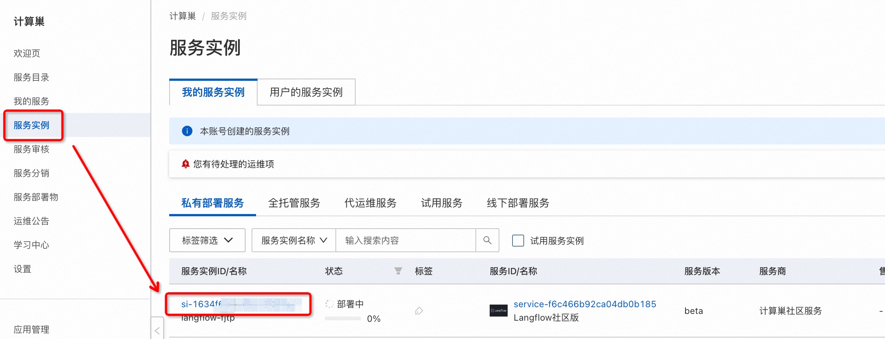
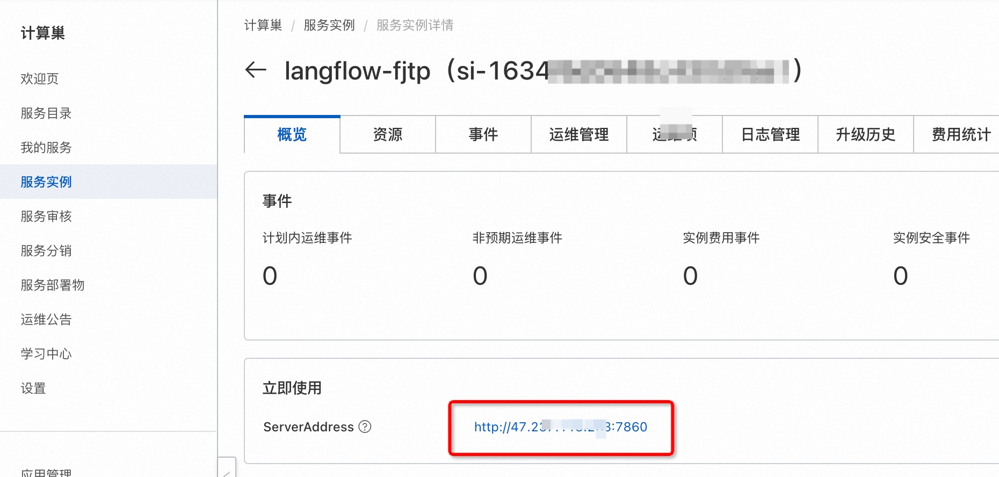
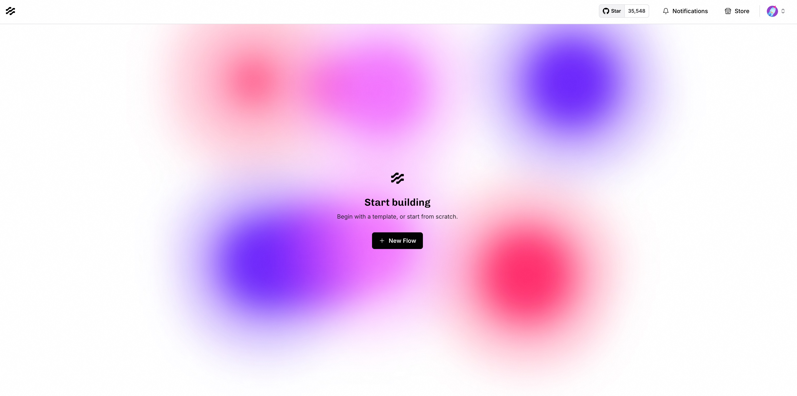

Langflow计算巢快速部署
免责声明：本服务由第三方提供，我们尽力确保其安全性、准确性和可靠性，但无法保证其完全免于故障、中断、错误或攻击。因此，本公司在此声明：对于本服务的内容、准确性、完整性、可靠性、适用性以及及时性不作任何陈述、保证或承诺，不对您使用本服务所产生的任何直接或间接的损失或损害承担任何责任；对于您通过本服务访问的第三方网站、应用程序、产品和服务，不对其内容、准确性、完整性、可靠性、适用性以及及时性承担任何责任，您应自行承担使用后果产生的风险和责任；对于因您使用本服务而产生的任何损失、损害，包括但不限于直接损失、间接损失、利润损失、商誉损失、数据损失或其他经济损失，不承担任何责任，即使本公司事先已被告知可能存在此类损失或损害的可能性；我们保留不时修改本声明的权利，因此请您在使用本服务前定期检查本声明。如果您对本声明或本服务存在任何问题或疑问，请联系我们。
概述
Langflow 是一个全新的可视化框架，用于构建多代理和 RAG 应用程序。它是开源的，基于 Python 构建，完全可定制，并且对大型语言模型和向量存储系统具有广泛的兼容性。其直观的界面使得 AI 构建模块易于操作，使开发人员能够快速原型化并将他们的想法转化为强大且实用的解决方案。 更多信息，请查看官网GitHub：https://github.com/langflow-ai/langflow。
前提条件
部署Langflow社区版服务实例，需要对部分阿里云资源进行访问和创建操作。因此您的账号需要包含如下资源的权限。 说明：当您的账号是RAM账号时，才需要添加此权限。
| 权限策略名称 | 备注 |
|---|---|
| AliyunECSFullAccess | 管理云服务器服务（ECS）的权限 |
| AliyunVPCFullAccess | 管理专有网络（VPC）的权限 |
| AliyunROSFullAccess | 管理资源编排服务（ROS）的权限 |
| AliyunComputeNestUserFullAccess | 管理计算巢服务（ComputeNest）的用户侧权限 |
计费说明
Langflow社区版在计算巢部署的费用主要涉及：
- 所选vCPU与内存规格
- 系统盘类型及容量
- 公网带宽
部署架构

参数说明
| 参数组 | 参数项 | 说明 |
|---|---|---|
| 服务实例 | 服务实例名称 | 长度不超过64个字符，必须以英文字母开头，可包含数字、英文字母、短划线（-）和下划线（_） |
| 地域 | 服务实例部署的地域 | |
| 付费类型 | 资源的计费类型：按量付费和包年包月 | |
| ECS实例配置 | 实例类型 | 可用区下可以使用的实例规格 |
| 实例密码 | 长度8-30，必须包含三项（大写字母、小写字母、数字、 ()`~!@#$%^&*-+=|{}[]:;'<>,.?/ 中的特殊符号） | |
| 网络配置 | 可用区 | ECS实例所在可用区 |
| VPC ID | 资源所在VPC | |
| 交换机ID | 资源所在交换机 |
部署流程
-
访问计算巢Langflow社区版部署链接 ，按提示填写部署参数，确认参数后点击下一步：确认订单：

-
确认订单完成后同意服务协议并点击立即创建 进入部署阶段。 

-
等待部署完成后就可以开始使用服务，进入服务实例详情点击Langflow链接。  
-
进入后，即可使用Langflow。 